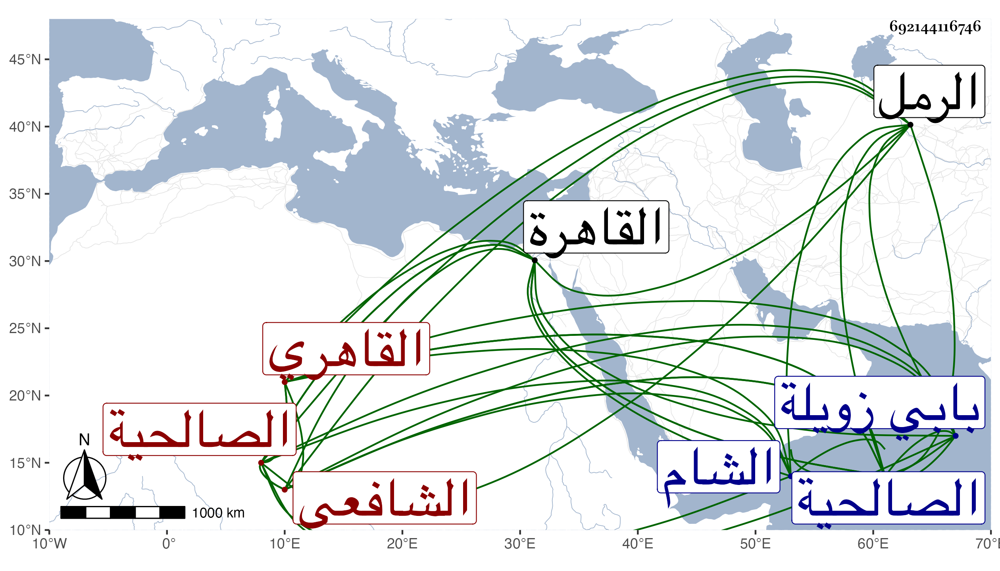

0902Sakhawi.DawLamic.ITO20230111-ara1.EIS1600.692144116746
Biography ID: 692144116746
261
محمد بن محمد بن عبد الرحمن بن فريج ناصر الدين أبو عبد الله القاهري الشافعي ويعرف بابن الصالحي . نسبة للصالحية التي بظاهر القاهرة ، وقال المقريزي إلى الصالحية من منازل الرمل بطريق الشام . ولد سنة بضع وخمسين وسمع فيما ذكر من الجمال بن نباته وغيره وتعاني الادب فنظم الشعر المتوسط وكتب الخط الحسن ووقع عن القضاء ثم ناب في الحكم عن الحنفية ثم عن الشافعية ثم وثب على منصب قضاء الشافعية لما غاب الصدر المناوي في السفر مع السلطان لقتال تمر لنك واستقر بعد اليأس من المناوي وشغور المنصب عنه أزيد من شهرين في تاسع عشري شعبان سنة ثلاث فأقام عشرة أشهر ثم عزل في رابع جمادى الآخرة سنة أربع واستقر الجلال البلقيني عوضا عنه بمال كثير بذله بعناية سودون طاز ثم أعيد الصالحي بعناية السالمي في شوال التي تليها فلم يلبث أن مات بعد أربعة أشهر بعلة القولنج الصفراوي ثم في ثاني عشر المحرم سنة ست وصلى عليه بجامع الصالح خارج بابي زويلة وحضر جنازته أمير المؤمنين ومن الامراء قطلو بغا الكركي ولم يحضر من الاعيان سواهم ودفن في تربته عند المشهد النفيسي وأسف أكثر الناس عليه لحسن تودده وكرم نفسه وطيب عشرته ومشاركته في العلم في الجملة مع لين جانبه وتواضعه وقبوله للرسائل بحيث كثر النواب في زمنه وكثرة بره للفقراء ولاغنياء حتى أنه ربما أدى إلى إحسان بعض المستحقين من الايتام ونحوهم ولأنهم ألفوا من الصدر المناوي ألباو المفرط التي جرت العادة بعدم احتماله ولو عظم المتلبس به . رحمه الله وعفا عنه . ذكره شيخنا في إنبائه باختصار عن هذا . وقال المقريزي في عقوده كان جده نصرانيا من أهل الصالحية يقال له فريج فلما أسلم تسمى عبد الرحمن ، وكان أبوه ممن يشهد بالحوانيت واتصل بالمتوكل على الله محمد ولازمه ونشأ ابنه فجلس شاهدا وكتب الخط الجيد وتعلق بخدمة الزمام مقبل فولاه شهادة ديوانه وعدة وظائف ووقع في الحكم ثم ناب في القضاء من بعد التسعين وصار يعرف الرياسة والحشمة وقرض الشعر وهو نثره متوسطان مع حسن شكالة ومعرفة بالنحو وبالوراقة ومشاركة في الفقه . ولما مات شنعت القالة فيه من أرباب الأموال التي بذلها فإنه لم يترك شيئا وقد جنى على نفسه على غيره .
